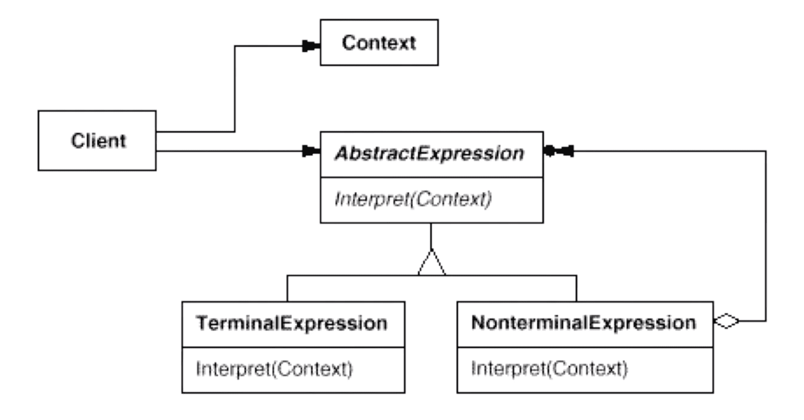
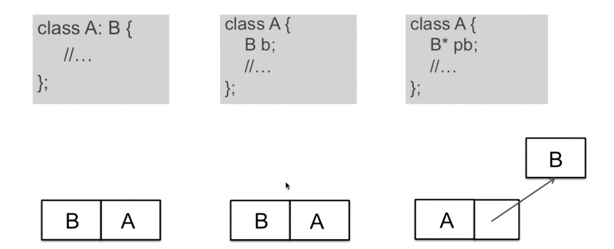

“领域规则类”设计模式（C++）
在特定领域中，某些变化虽然频繁，但可以抽象为某种规则。这时候，结合特定领域，将问题抽象为语法规则，从而给出在该领域下的一般性解决方案。
解析器模式（Interpreter）
在软件构建过程中，如果某一特定领域的问题比较复杂，类似的结构不断重复出现，如果使用普通的编程方式来实现将面临非常频繁的变化。在这种情况下，将特定领域的问题表达为某种语法规则下的句子，然后构建一个解释器来解释这样的句子，从而达到解决问题的目的。（听起来是 DSL？）

模式定义：给定一个语言，定义它的文法的一种表示，并定义一种解释器，这个解释器使用该表示来解释语言中的句子。
总结：
- 解释器模式的应用场合是该模式应用中的难点，只有满足“业务规则频繁变化，且类似的结构不断重复出现，并且容易抽象为语法规则的问题”才适合使用解释器模式；
- 使用解释器模式来表示文法规则，从而可以使用 OOP 的技巧来方便地“扩展”文法；
- 解释器模式比较适合简单的文法表示，对于复杂的文法表示，该模式可能会产生比较大的类层次结构，需要求助于语法分析生成器（比如配合使用 flex + yacc）这样的标准工具；
设计模式总结
完全稳定和完全变化这两种极端代码结构无法使用设计模式。
重构技法：
- 静态 -> 动态；
- 早绑定 -> 晚绑定；
- 继承 -> 组合；
- 编译时依赖 -> 运行时依赖；
- 紧耦合 -> 松耦合；
C++ 对象模型：

其中第三种模式最为常用也最为灵活（多态）；前两种方式为紧耦合，第三种通过指针带来的多态性可以保持一定的松耦合。
什么时候不用设计模式：
- 代码可读性很差时；
- 需求理解还很浅时；
- 变化没有显现时；
- 不是系统的关键依赖点时；
- 项目没有复用价值时；
- 项目将要发布时；
经验之谈：
- 不要为模式而模式；
- 关注抽象类 & 接口；
- 理清变化点和稳定点；
- 审视依赖关系；
- 要有 Framework 和 Application 的区隔思维；
- 良好的设计是演化的结果；
评论 | Comments